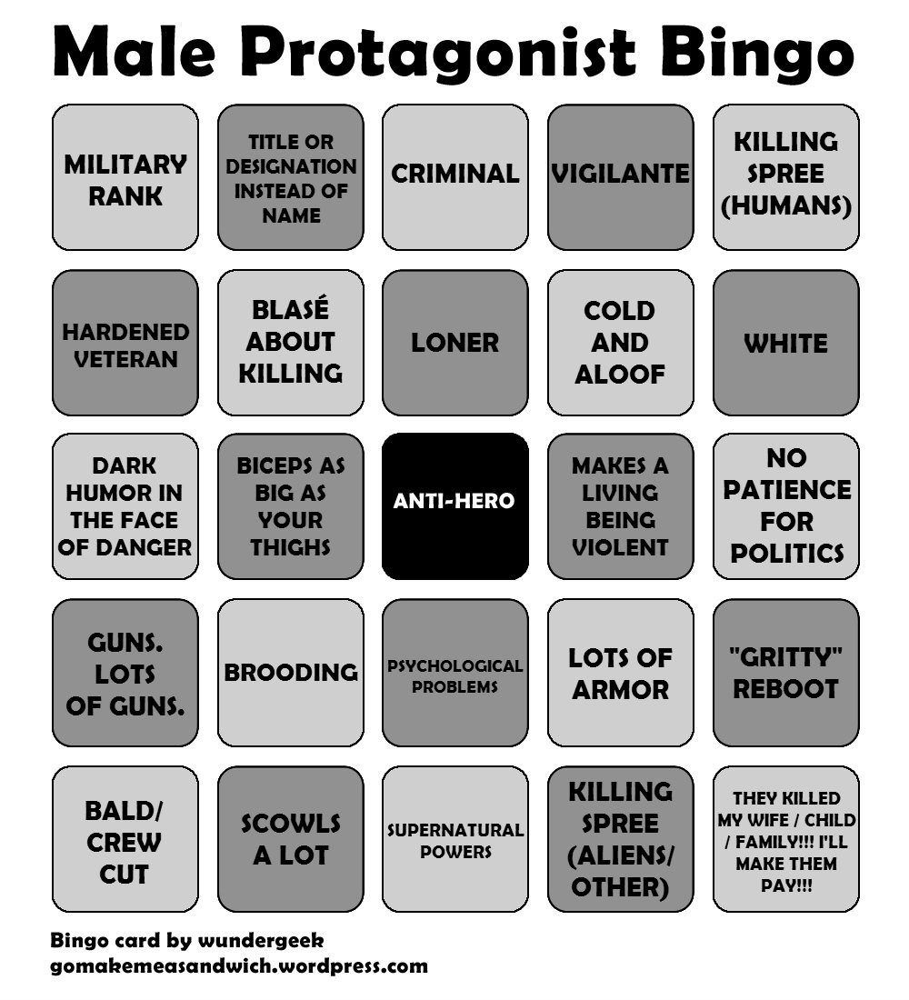

Gender
Playable Characters
Female Characters
In action, RPG, shooter games...
45% of games provide players with male & female options
however, in games which feature a single protagonist
only 4% have a female protagonist
A study split female characters into 3 of these types:
- Sexualized
- Scantily Clad
- Vision of Beauty
80% of all female characters represent at least one of these
25% represent all three
Male Characters
Hypermasculine
Unrealistic body proportions
- Chests: 2 inches larger
- Heads: 13 inches bigger
- Waists: 5 inches wider
- Hips: 7 inches wider
Male Protagonist Bingo
Gamers
As of 2014, women comprise 48% of gamers
60% of girls aged 11 to 18 prefer to play a character of their own gender,
whereas only 35% of boys have a preference for playing only male characters
Genre
female gamers prefer to play games role-playing games, fantasy, and games which feature in-game communication
male gamers prefer to play games that are action packed, 1st person shooters, which heavily feature competition